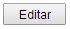
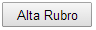
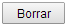

Rubros/Subrubros
Al ingresar a la pantalla de de rubros/subrubros, se le presentará a la izquierda un árbol con todos los rubros que están dados de alta en el sistema.
Inicialmente los botones están inhabilitados, y se habilitaran al seleccionar un rubro para realizar las distintas operaciones.
Editar rubros/subrubros
Seleccione el rubro que desea modificar y haga click en el botón 
Será dirigido a una nueva pantalla donde se cargan automáticamente los datos del rubro seleccionado, así como también la mano de obra y los materiales del mismo.
Agregar nuevo rubro
En la pantalla principal, al seleccionar un nodo al que puedan agregársele subrubros, el botón  se habilitará.
Seleccione el rubro padre al que agregar un subrubro y haga click en Alta Rubro.
Será dirigido a una nueva pantalla donde encuentran disponibles los campos para cargar los datos del nuevo rubro, así como también la mano de obra y los materiales del mismo.
Borrar rubro
Para realizar el borrado de un rubro, seleccione en el árbol de rubros el rubro que desea dar de baja y haga click en el botón  Se le pedirá una confirmación antes de realizar el borrado. Tenga en cuenta que se borrará toda información asociada al rubro.